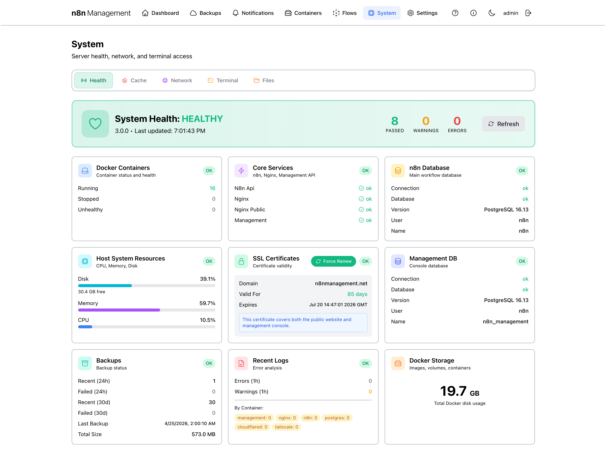
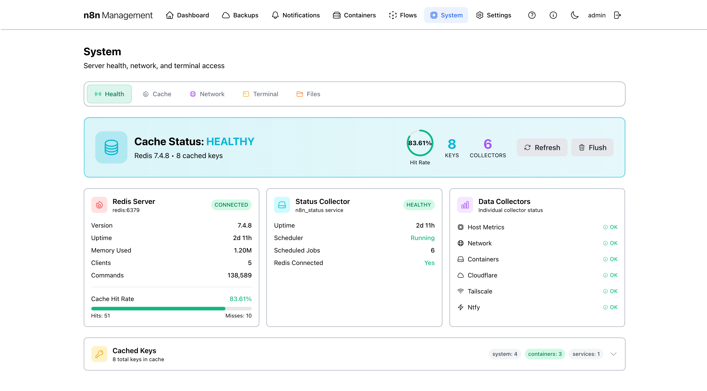
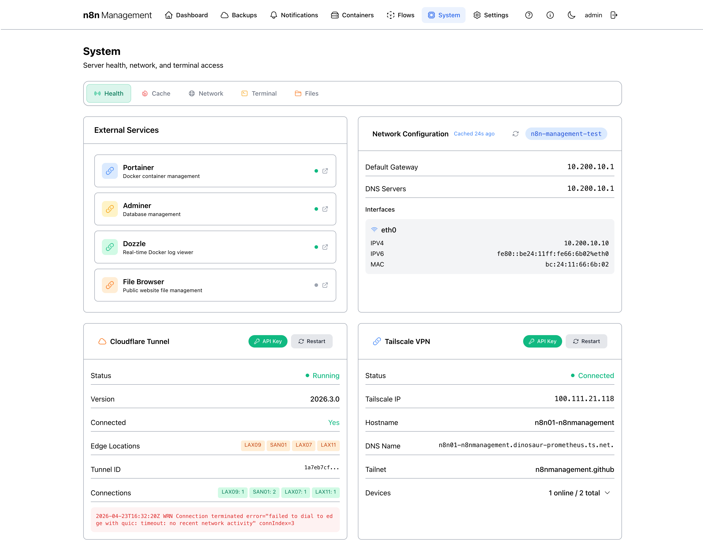
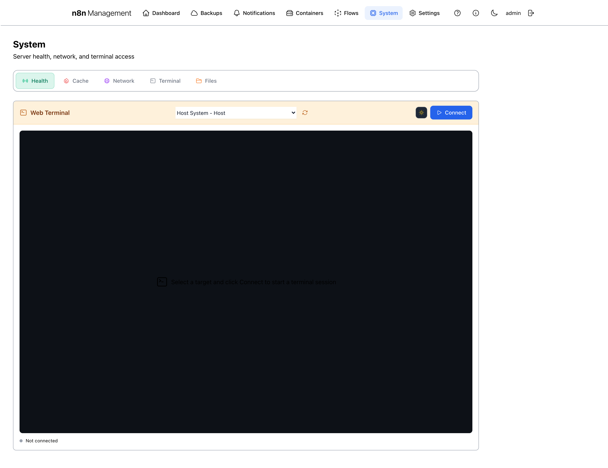
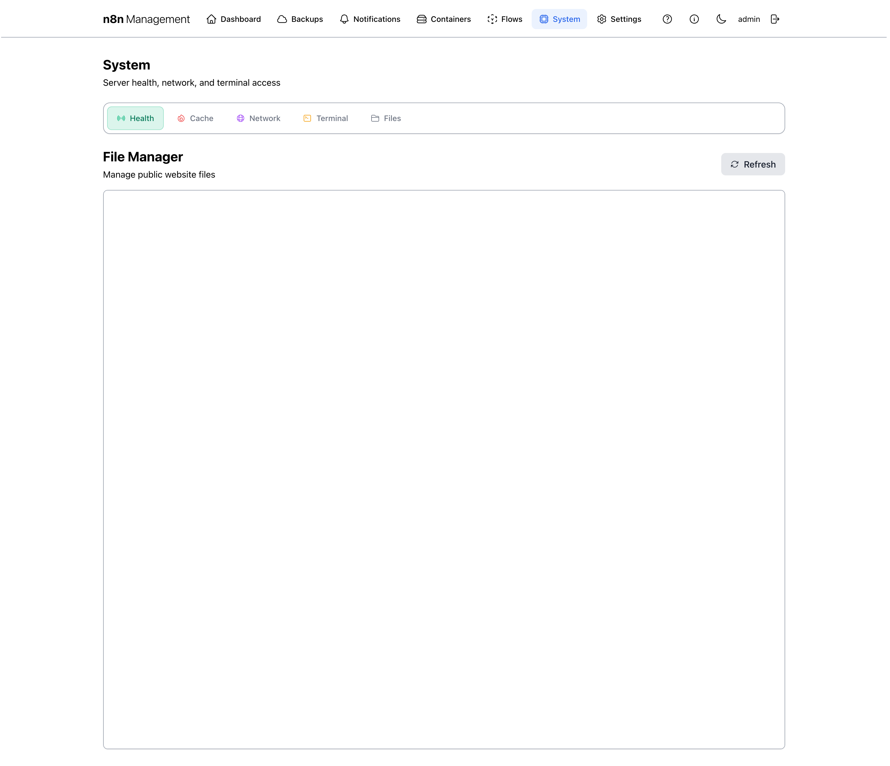

System
The System page is your operations dashboard for the host: health snapshot, Redis cache state, network and tunnel integrations, in-browser terminal access, and a quick file manager. Most of this is read-only — to change a setting use the Settings page; to act on a container use Containers.
Overview
The header is a short title strip ("System / Server health, network, and terminal access"). Below it sit five top-level tabs:
| Tab | Purpose |
|---|---|
| Health | Top-level health summary plus a 3×3 grid of system status cards. Default view. |
| Cache | Redis cache status and the n8n_status data-collector service. |
| Network | External services list, host network configuration, Cloudflare Tunnel, Tailscale. |
| Terminal | In-browser shell access to the host or any container. |
| Files | Embedded File Browser for the public website volume. |
Health tab
The default view. The whole tab is a snapshot — a top banner with overall status counts (HEALTHY / DEGRADED / ERROR with Passed / Warnings / Errors counters and a Refresh button), then 9 cards covering different subsystems.

The nine status cards
| Card | Shows |
|---|---|
| Docker Containers | Running / Stopped / Unhealthy counts. Mirrors Containers → Summary cards. |
| Core Services | Confirms each front-line service responds: N8n Api, Nginx, Nginx Public, Management. |
| n8n Database | PostgreSQL connection status, version, user, database name for the n8n workflow DB. |
| Host System Resources | Disk / Memory / CPU usage with progress bars. Same data as the Dashboard stats cards. |
| SSL Certificates | Domain, days valid, expiry date, plus a Force Renew button. See below. |
| Management DB | Same fields as the n8n Database card but for the management console's own PostgreSQL database. |
| Backups | Recent (24h / 30d) success counts plus the last backup timestamp and total size. |
| Recent Logs | Error and warning counts in the last hour, broken down by container — useful for spotting a noisy service. |
| Docker Storage | Total disk consumed by Docker — images, volumes, build cache. |
SSL Certificates & Force Renew
The SSL Certificates card is the most-touched card on this page. It shows the certificate's domain, days remaining until expiration, exact expiry timestamp, and a green Force Renew button.
Force Renew behavior
Clicking Force Renew triggers an immediate Let's Encrypt renewal via the certbot container, bypassing certbot's normal "expires in less than 30 days" gate. The browser request waits up to 5 minutes for the operation to complete because DNS-01 challenges have propagation delays. The button uses --no-random-sleep-on-renew to skip certbot's default random delay.
.env are still valid, and that your certbot container image matches your DNS provider (e.g., certbot/dns-cloudflare). Common error symptoms are documented in Troubleshooting → SSL Certificate Issues.Cache tab
The Cache tab surfaces Redis health and the data-collector pipeline that keeps the management console fast. It's a status view — to flush keys or reconfigure Redis, edit the relevant variables under Settings → Environment.

What's on this tab
- Cache Status banner — overall health (HEALTHY / DEGRADED), Redis version, total cached keys, top-line hit rate.
- Counters strip — Hit Rate (%) / KEYS / COLLECTORS, with Refresh and Flush buttons.
- Redis Server card — server URL, connection status, version, uptime, memory used, client count, total commands processed.
- Cache Hit Rate card — running tally of hits vs. misses.
- Status Collector card — health of the n8n_status sidecar service that populates the cache.
- Data Collectors list — one row per individual collector (Host Metrics, Network, Containers, Cloudflare, Tailscale, Ntfy) with a per-collector status pill.
- Cached Keys — list of currently-cached entries.
Network tab
The Network tab is the densest page in the entire console. Four sub-sections cover external services, host network configuration, the Cloudflare tunnel, and Tailscale.

External Services
A list of optional companion services that ship with the stack:
| Service | Use it for |
|---|---|
| Portainer | Visual Docker management — image pulls, manual container ops, stack inspection. Lives at /portainer/. |
| Adminer | Direct PostgreSQL access for ad-hoc queries on either the n8n DB or the management DB. Lives at /adminer/. |
| Dozzle | Real-time log streaming across all containers — better for tailing many services at once than the per-container Logs viewer in Containers. |
| File Browser | Web-based file manager scoped to the public_web_root volume. Same UI as the Files tab but standalone. |
Network Configuration
Read-only view of the host's network state: hostname, default gateway, DNS servers, and per-interface details (name, IPv4, IPv6, MAC).
Cloudflare Tunnel
If you've configured a Cloudflare Tunnel, this card shows tunnel state (Running / Stopped), the cloudflared version, current connectivity (Connected / Disconnected), tunnel ID, and the Cloudflare edge locations the tunnel is currently connected to. An API Key button reveals or copies the cloudflared API token. A Restart button restarts the cloudflared container without leaving the page.
Tailscale
If Tailscale is enabled, the Tailscale card shows status (Connected / Disconnected), the assigned Tailscale IPv4 in your tailnet, hostname, OS, peer count, account/email of the logged-in tailnet user, and a Reset Auth Key button.
Terminal tab
The Terminal tab gives you an in-browser shell — same engine as Containers' per-row Terminal button, but accessible directly here with a target picker. Targets include the Host System (a shell on the management host itself) and per-container shells.

How it works
Selecting a target sets the URL to /management/system?tab=terminal&target=<id>&autoconnect=true and the management API spawns a temporary shell-attachment via Docker exec, served over a websocket back to your browser.
/host filesystem allows (typically root). Treat each session as if you were SSH-ing in. Don't paste arbitrary commands; close the tab when you're done.security_opt=["apparmor=unconfined"] so they work inside LXC. If a session fails to start, the symptom and the canonical fix are documented in Troubleshooting.Files tab
The Files tab embeds the File Browser service inside the management console. It's scoped to the public_web_root Docker volume — the directory served by the public website nginx.

Use this for quick edits to public website assets without leaving the management console — uploads, renames, downloads, and inline text editing for HTML/CSS/JS files.
.filebrowser.json config (covered in Troubleshooting → File Browser).